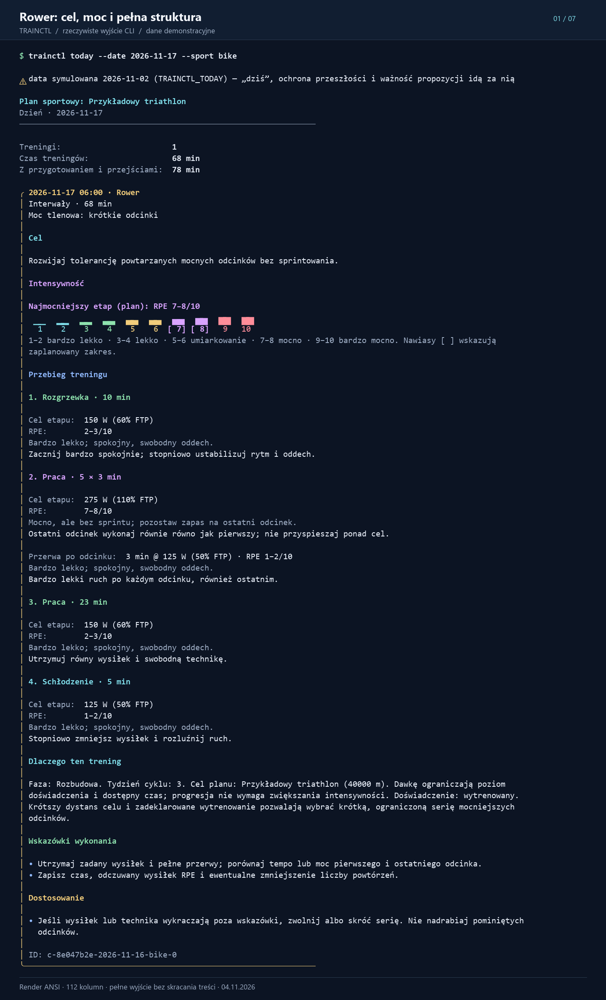
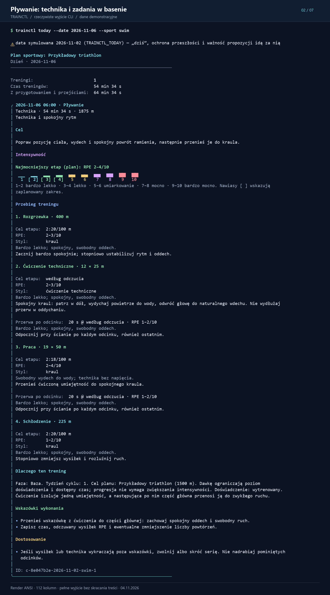
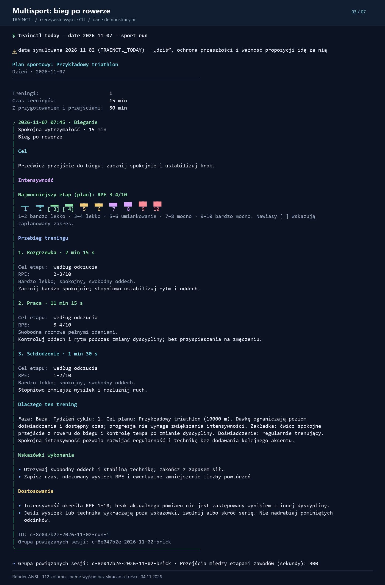
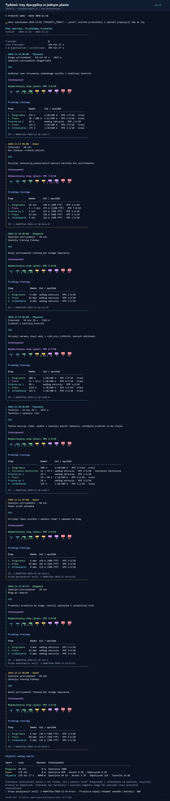
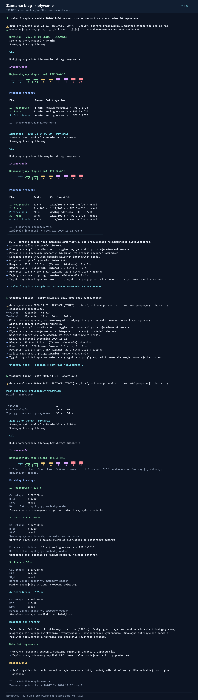
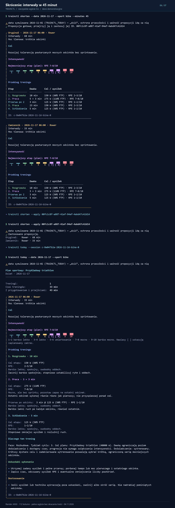
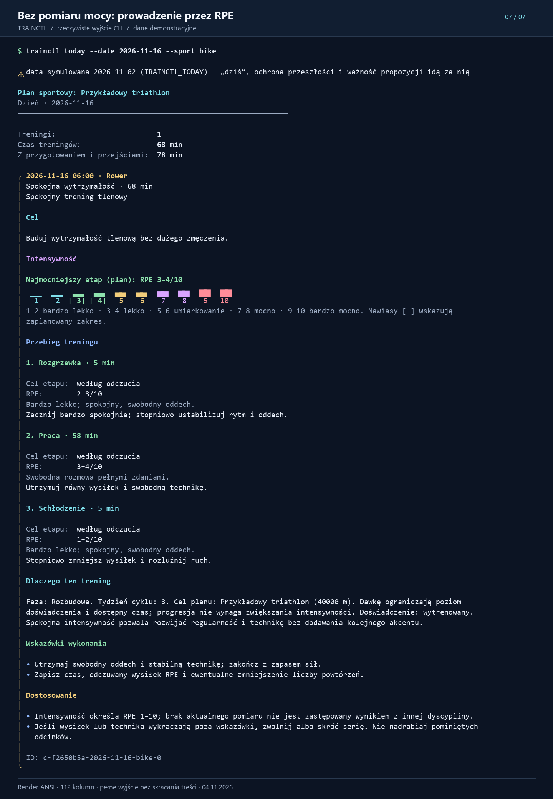

01 / 07
Rower: cel, moc i pełna struktura
Rozgrzewka, 5 × 3 min przy 110% FTP, aktywne przerwy, spokojna jazda i schłodzenie.
Rower, pływanie i multisport: siedem przykładów pokazujących strukturę jednostek, cele wysiłku, zamianę dyscypliny i skracanie treningu.

Rozgrzewka, 5 × 3 min przy 110% FTP, aktywne przerwy, spokojna jazda i schłodzenie.

Konkretne ćwiczenie, odcinki w pełnych długościach basenu, tempo, odpoczynki i RPE.

Cel zakładki, kontrola wysiłku i stopniowe wejście w rytm biegu.

Pełny widok tygodnia, czas każdej jednostki, intensywność i przejście rower–bieg.

Przygotowanie propozycji, zastosowanie i gotowa jednostka pływacka z własnym celem.
trainctl replace --date 2026-11-04 --sport run --to-sport swim --minutes 40 --prepare trainctl replace --apply a41d5b30-6a01-4c03-8ba1-31a8873c885c trainctl today --date 2026-11-04 --sport swimPełny zapis ANSI

Nowy budżet czasu zachowuje rozgrzewkę, pełne powtórzenia, przerwy i schłodzenie.
trainctl shorten --date 2026-11-17 --sport bike --minutes 45 trainctl shorten --apply 00fc1c8f-a887-41af-94ef-4abd47c42d14 trainctl today --date 2026-11-17 --sport bikePełny zapis ANSI

Spokojny trening z instrukcjami odczuwanego wysiłku, gdy brak kalibracji FTP i miernika.
Użyj lokalnej wersji repozytorium zawierającej nowe funkcje. Skopiuj trainctl.yaml do osobnego katalogu demonstracyjnego. Polecenia na ekranach wykonano wewnątrz takiego katalogu. Poniżej ustawienia dla PowerShell:
$env:TRAINCTL_LANG = 'pl' $env:TRAINCTL_TODAY = '2026-11-02' $env:COLUMNS = '112' $env:TERM = 'xterm-256color' trainctl --color always plan trainctl --color always today --date 2026-11-17 --sport bike
Identyfikatory propozycji są generowane przy każdym wykonaniu. Użyj identyfikatora zwróconego u siebie przez replace lub shorten. Przykład RPE korzysta z osobnego planu bez FTP, kalibracji rowerowej i zasobu powerMeter.